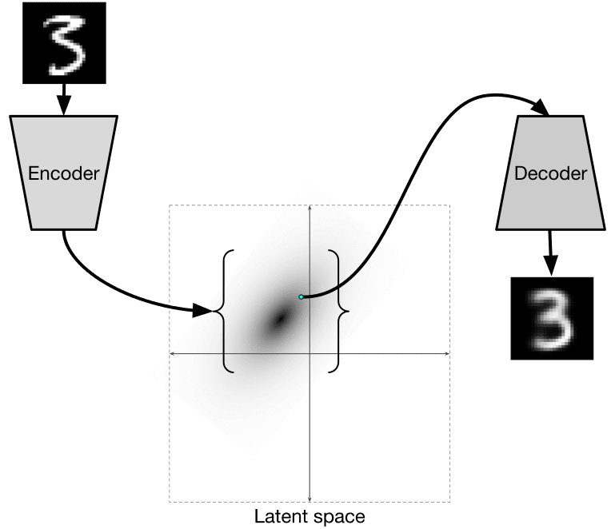
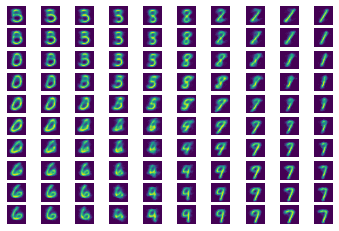
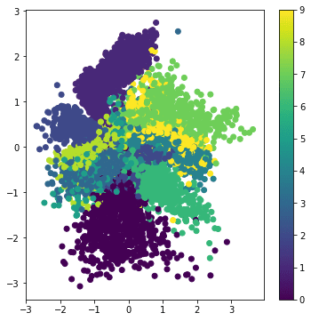

Autoencoders
When training CNNs, one of the problems is that we need a lot of labeled data. In the case of image classification, we need to separate images into different classes, which is a manual effort.
Pre-lecture quiz
However, we might want to use raw (unlabeled) data for training CNN feature extractors, which is called self-supervised learning. Instead of labels, we will use training images as both network input and output. The main idea of autoencoder is that we will have an encoder network that converts input image into some latent space (normally it is just a vector of some smaller size), then the decoder network, whose goal would be to reconstruct the original image.
✅ An autoencoder is "a type of artificial neural network used to learn efficient codings of unlabeled data."
Since we are training an autoencoder to capture as much of the information from the original image as possible for accurate reconstruction, the network tries to find the best embedding of input images to capture the meaning.л.

Image from Keras blog
Scenarios for using Autoencoders
While reconstructing original images does not seem useful in its own right, there are a few scenarios where autoencoders are especially useful:
- Lowering the dimension of images for visualization or training image embeddings. Usually autoencoders give better results than PCA, because it takes into account spatial nature of images and hierarchical features.
- Denoising, i.e. removing noise from the image. Because noise carries out a lot of useless information, autoencoder cannot fit it all into relatively small latent space, and thus it captures only important part of the image. When training denoisers, we start with original images, and use images with artificially added noise as input for autoencoder.
- Super-resolution, increasing image resolution. We start with high-resolution images, and use the image with lower resolution as the autoencoder input.
- Generative models. Once we train the autoencoder, the decoder part can be used to create new objects starting from random latent vectors.
Variational Autoencoders (VAE)
Traditional autoencoders reduce the dimension of the input data somehow, figuring out the important features of input images. However, latent vectors ofter do not make much sense. In other words, taking MNIST dataset as an example, figuring out which digits correspond to different latent vectors is not an easy task, because close latent vectors would not necessarily correspond to the same digits.
On the other hand, to train generative models it is better to have some understanding of the latent space. This idea leads us to variational auto-encoder (VAE).
VAE is the autoencoder that learns to predict statistical distribution of the latent parameters, so-called latent distribution. For example, we may want latent vectors to be distributed normally with some mean zmean and standard deviation zsigma (both mean and standard deviation are vectors of some dimensionality d). Encoder in VAE learns to predict those parameters, and then decoder takes a random vector from this distribution to reconstruct the object.
To summarize:
- From input vector, we predict
z_meanandz_log_sigma(instead of predicting the standard deviation itself, we predict its logarithm) - We sample a vector
samplefrom the distribution N(zmean,exp(zlog_sigma)) - The decoder tries to decode the original image using
sampleas an input vector

Image from this blog post by Isaak Dykeman
Variational auto-encoders use a complex loss function that consists of two parts:
- Reconstruction loss is the loss function that shows how close a reconstructed image is to the target (it can be Mean Squared Error, or MSE). It is the same loss function as in normal autoencoders.
- KL loss, which ensures that latent variable distributions stays close to normal distribution. It is based on the notion of Kullback-Leibler divergence - a metric to estimate how similar two statistical distributions are.
One important advantage of VAEs is that they allow us to generate new images relatively easily, because we know which distribution from which to sample latent vectors. For example, if we train VAE with 2D latent vector on MNIST, we can then vary components of the latent vector to get different digits:

Image by Dmitry Soshnikov
Observe how images blend into each other, as we start getting latent vectors from the different portions of the latent parameter space. We can also visualize this space in 2D:

Image by Dmitry Soshnikov
✍️ Exercises: Autoencoders
Learn more about autoencoders in these corresponding notebooks:
Properties of Autoencoders
- Data Specific - they only work well with the type of images they have been trained on. For example, if we train a super-resolution network on flowers, it will not work well on portraits. This is because the network can produce higher resolution image by taking fine details from features learned from the training dataset.
- Lossy - the reconstructed image is not the same as the original image. The nature of loss is defined by the loss function used during training
- Works on unlabeled data
Post-lecture quiz
Conclusion
In this lesson, you learned about the various types of autoencoders available to the AI scientist. You learned how to build them, and how to use them to reconstruct images. You also learned about the VAE and how to use it to generate new images.
🚀 Challenge
In this lesson, you learned about using autoencoders for images. But they can also be used for music! Check out the Magenta project's MusicVAE project, which uses autoencoders to learn to reconstruct music. Do some experiments with this library to see what you can create.
Post-lecture quiz
Review & Self Study
For reference, read more about autoencoders in these resources:
- Building Autoencoders in Keras
- Blog post on NeuroHive
- Variational Autoencoders Explained
- Conditional Variational Autoencoders
Assignment
At the end of this notebook using TensorFlow, you will find a 'task' - use this as your assignment.